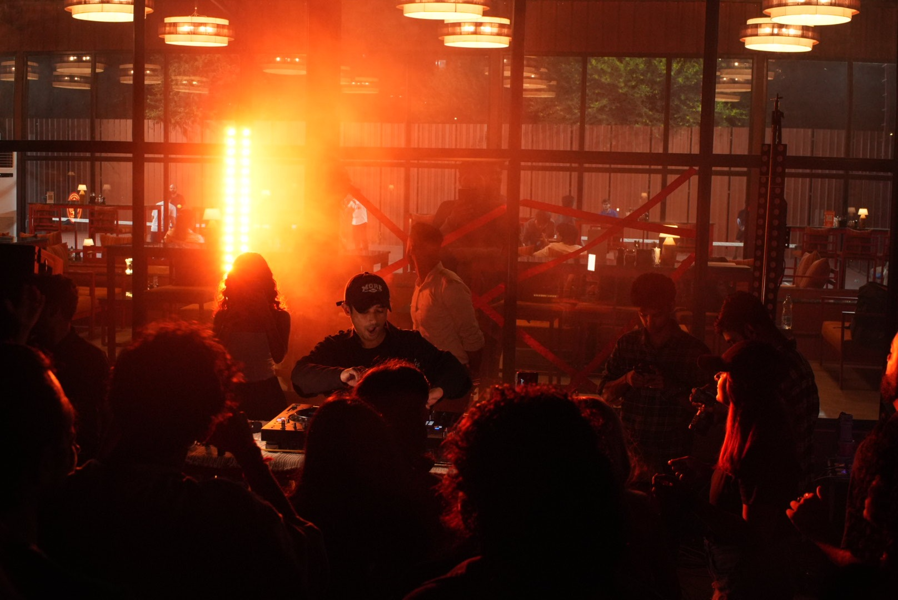
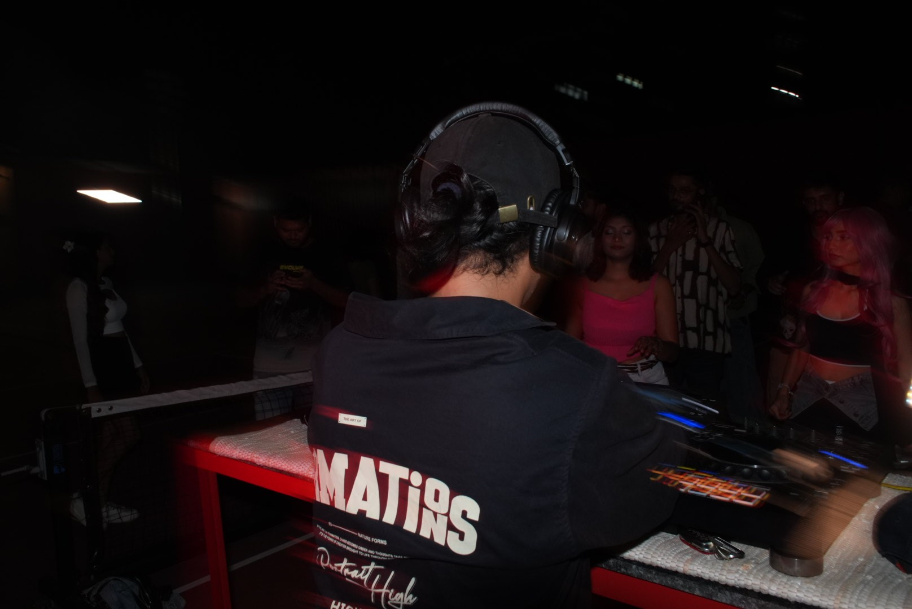

Atmosphere for
the mind. Rhythm
for the room.
Electronic music built between cinematic detail and the dancefloor.

LIVE / 01VIEW ↗
LIVE / 02VIEW ↗Sound with
a point of view.
SYNTHATTIC is the musical project of Ashutosh Purohit, an independent producer and DJ shaping immersive electronic music for both close listening and the club.
His sound moves through cinematic soundscapes, intricate drums and warm, nostalgic textures, meeting Afro-inspired club rhythms, atmospheric and melodic electronica, progressive and organic house, techno, and dub-leaning moods.
Across his productions, contrast is part of the language: movement and stillness, weight and space, emotion and release. His project D.I.Y is dedicated to Snoop, his late Persian cat.
In good
company.
Selected names and credits are reproduced from the supplied press material. Please verify wording and attribution before publication.
Everything you
need, in one place.
Artist information and press material for features, bookings and collaborations.